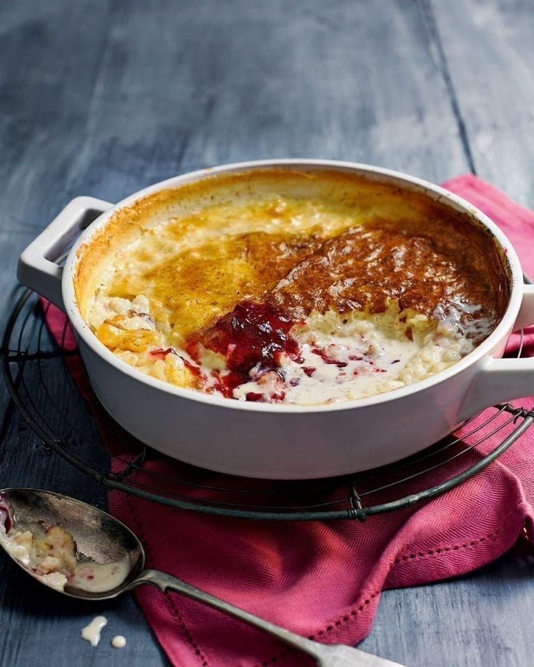

Kheer is this beautiful, creamy, sweet Asian pudding made with rice, tapioca, or vermicelli cooked in milk and sugar. Kheer is usually flavored with cardamom, raisins, coconut and saffron. Rice Kheer is a special sweet usually made for any festival or celebration just like sevai. But it can be made anytime as well as a sweet dessert which can be served after meals.
Meal prep time : 55 minutes
Servings : 6